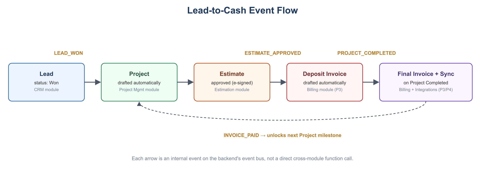

Lead to project
Keep customer details, communications, and opportunity status organized. When work is won, carry the context into the project.
THE WORKFLOW
Builders Stream is designed around the real handoffs of construction work—before the build, on the jobsite, and through approval.
Keep customer details, communications, and opportunity status organized. When work is won, carry the context into the project.
Organize projects into phases and tasks, give the right people a clear view of responsibilities, and keep progress visible.
Keep project documents close to the work and capture jobsite updates where the office can act on them.
Create a smoother path from estimate to customer approval with connected e-signature workflows.

A BETTER HANDOFF
Information should travel with the work—not get recreated every time a project reaches a new stage.
Request early access →